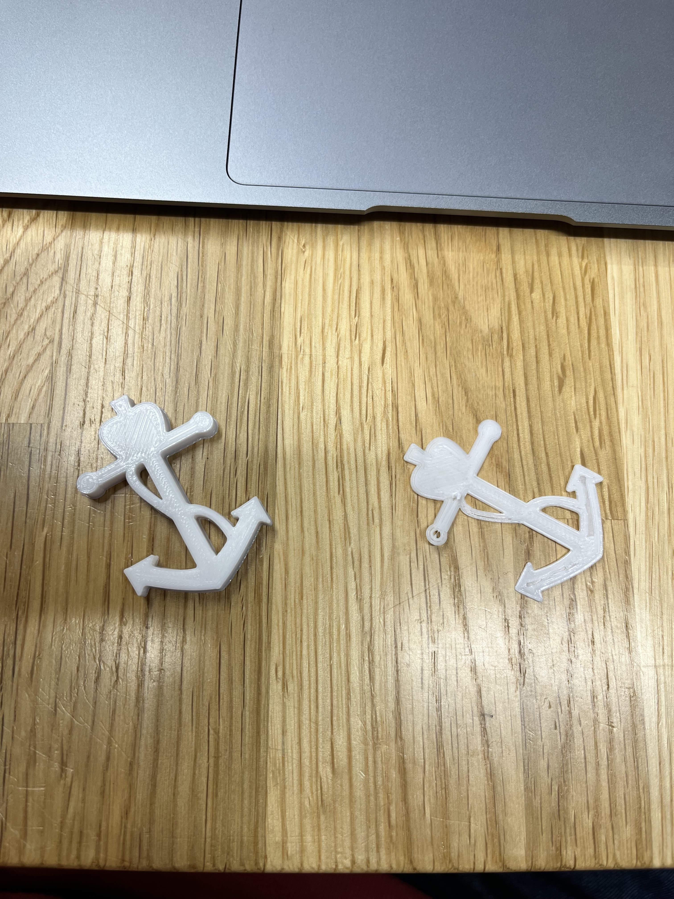

1.みなとみらいの風景カット
2.構想時の写真
3.完成時の写真
5.作品の説明
アンカーの下部分が支えになって指が滑ることがありません
アンカーの上部分がお穴になっているので引っ掛けて持ち歩くことができます
6.なぜこの作品を作ろうという思いに至ったか
初めは自分の好きなサッカーチームのマリノスのロゴの形をしたピンセットにしようと思いついたところから始まりました
掴めてシンプルなデザインにしたかったのでアンカーに形にしました
7.作成プロセスの中で調べたこと
画像を直接fusionのデータとして取り込みたかったのでデータの拡張子の変換方法について調べました
調べた結果、Conversioというサイトで変換できることがわかりました
fusionにはDXFの拡張子のものが開けるとわかりました
YouTube
9.試作品

ピンセットを作る前にアンカーの試作品を作ってみました
思ってた通りの形にできたのでこのあと簡単にピンセットを作れました